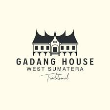

Ini adalah Jajanan Tradisional Indonesia yang begitu penuh banyak kenangan
Jajanan kami memang klasik, namun hal itulah yang
membuatnya luar biasa dan estetik. Dengan pesona jajanan Nusantara yang membuat semua terpukau. Kami akan selalu menemani di sela-sela aktivitas anda yang sangat sibuk.